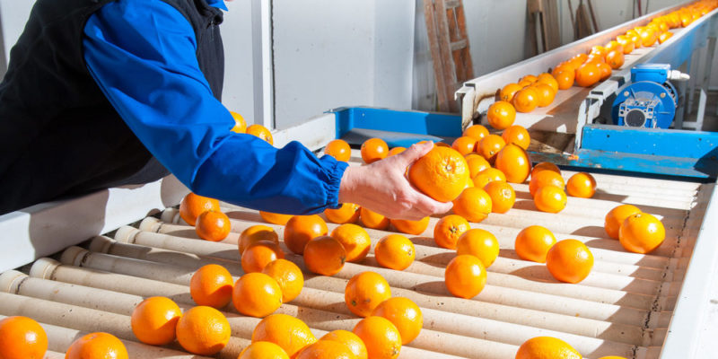

Gastos financieros
Gastos deducibles
Los gastos en calidad de deducibles, son todos aquellos gastos que se puedes restarle a tus ingresos para conseguir un beneficio...

¿QUÉ SON LOS MONOPOLIOS?
A lo largo del proceso de comercialización, las empresas, con el fin de alcanzar mayores beneficios económicos, tendrán que llevar a cabo...
Por Sebastián Luna Rodríguez

FACTORES DE PRODUCCIÓN
En los factores de producción son los insumos que se pueden llegar a utilizar para otros bienes o servicios. Así, se dividen en cuatro etapas que son: tierra, trabajo...
Por Ángel de Jesús Guzmán Ramírez